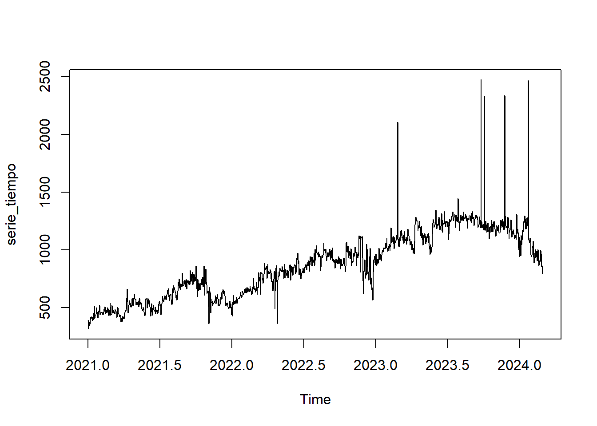
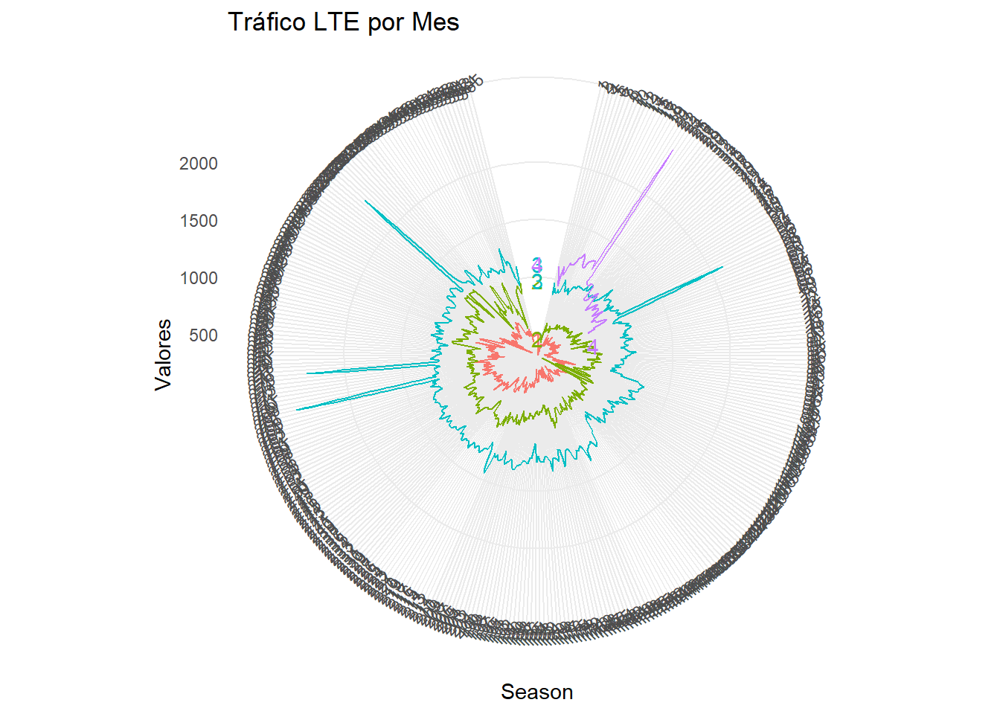
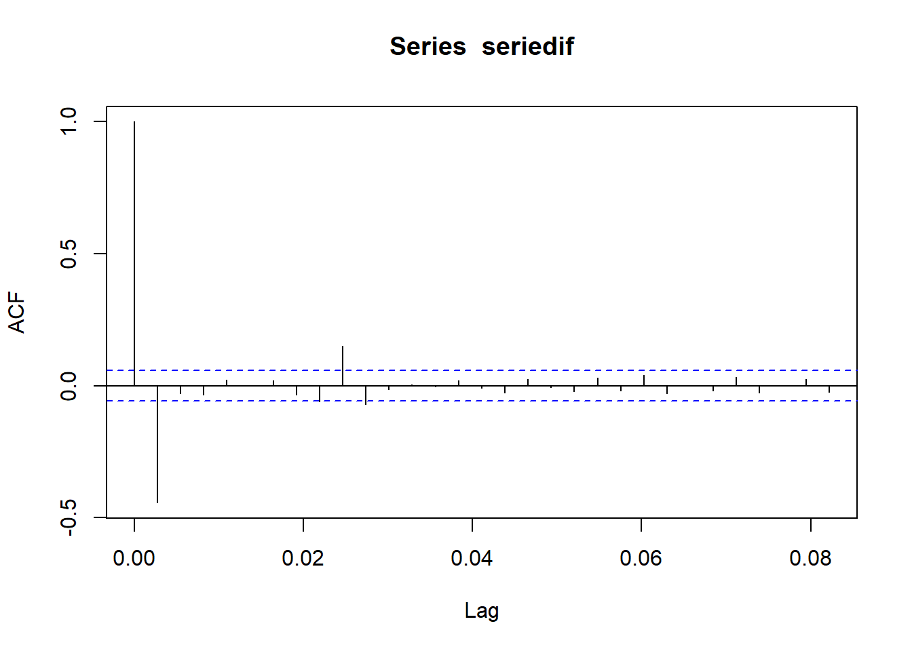
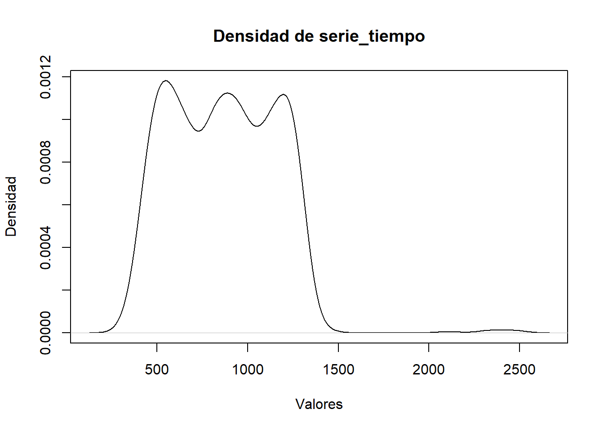
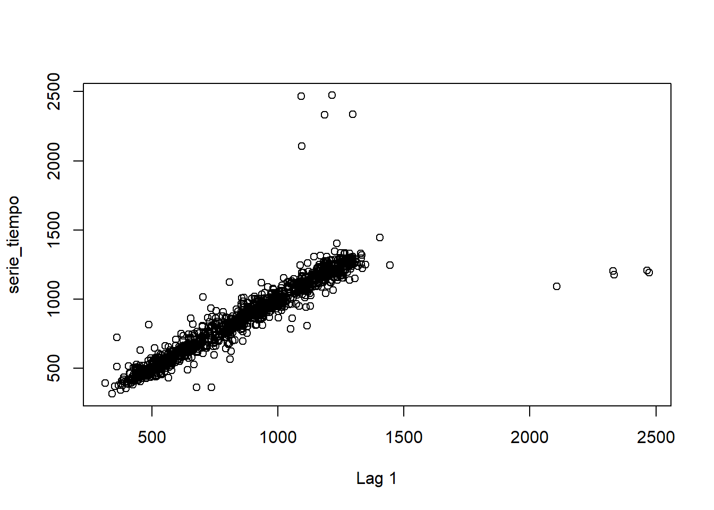
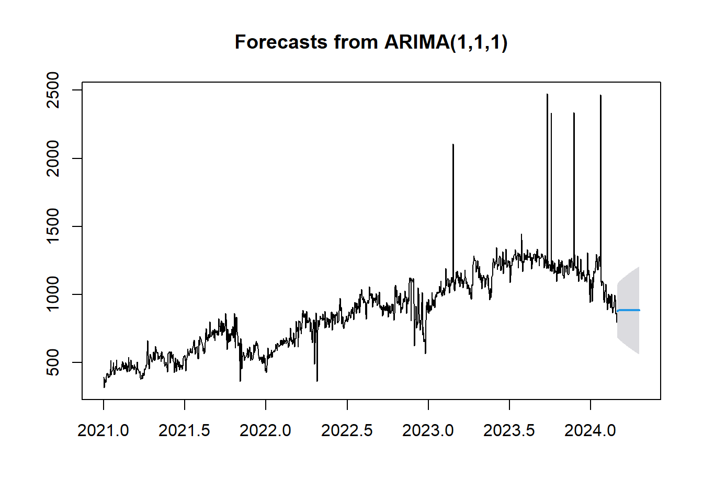
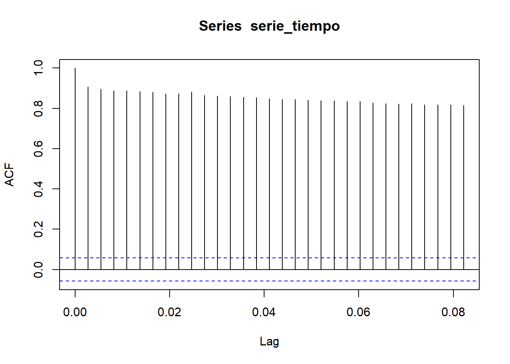
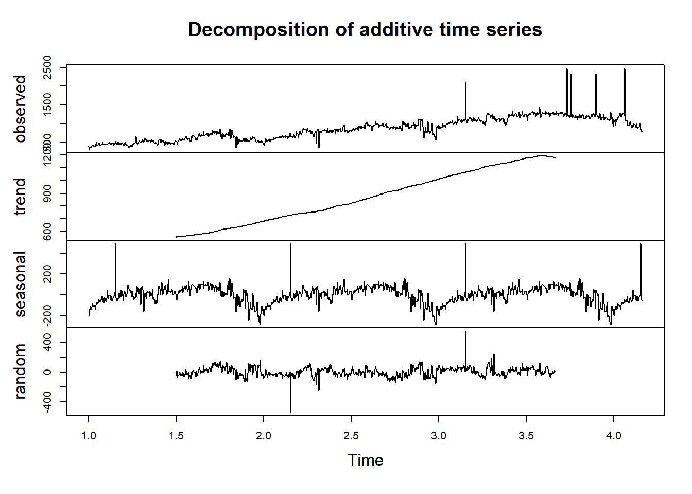

Capítulo 4 Preparación y análisis
4.1 Cargue de datos
Importamos la información de tráfico de una Estación base del municipio de Cundinamarca, esta información ya viene anonimizada en sus nombres por motivos de confidiencialidad de la empresa
Realizamos el cargue de los datos csv
4.1.1 Formato de fechas
Para el manejo de datos en la columna “M_FECHA_DIA” damos formato con “as.Date” y lo ordenamos
data_sitio$M_FECHA_DIA <- as.Date(data_sitio$M_FECHA_DIA)
data_sitio <- data_sitio[order(data_sitio$M_FECHA_DIA), ]Buscamos el mínimo día y la cantidad de días
fecha_inicio <- min(data_sitio$M_FECHA_DIA)
n_dias <- as.numeric(max(data_sitio$M_FECHA_DIA) - fecha_inicio) + 1
fecha_max <- max(data_sitio$M_FECHA_DIA)
fecha_inicio## [1] "2021-01-01"## [1] "2024-02-29"Verificamos el día mínimo y el máximo de nuestro dataset
## [1] "2021-01-01"## [1] "2024-02-29"Verificamos si la serie no tiene datos faltantes entre días para poder usar la funcion “ts”
4.1.2 Selección de campos
Seleccionamos las columnas de interés de fecha (“M_FECHA_DIA”) y tráfico en LTE () “PAYLOAD_4G”)
## M_FECHA_DIA PAYLOAD_4G
## 1 2021-01-01 393.57
## 2 2021-01-02 314.84
## 3 2021-01-03 341.93
## 4 2021-01-04 375.91
## 5 2021-01-05 368.37
## 6 2021-01-06 353.49Creamos la serie de tiempo con la función “ts” donde le indicamos la fecha de inicio con una frecuencia diaria
serie_tiempo <- ts(
data_sitio$PAYLOAD_4G,
start=c(as.numeric(format(fecha_inicio, "%Y")), as.numeric(format(fecha_inicio, "%j"))),
frequency=365
)Verificamos el tipo de datos de la serie de tiempo
## [1] "ts"Validación de fecha mínima y máxima de la serie
start_time <- start(serie_tiempo)
end_time <- end(serie_tiempo)
frequency <- frequency(serie_tiempo)
min_date <- as.Date(paste(start_time[1], start_time[2], sep="-"), "%Y-%j")
max_date <- as.Date(paste(end_time[1], (end_time[2]-1) / frequency * 365, sep="-"), "%Y-%j")
min_date## [1] "2021-01-01"## [1] "2024-02-28"4.2 Análisis Series de tiempo
4.2.1 Análisis descriptivo
Al visualizar la serie de tiempo se puede visualizar la tendencia del tráfico con una pendiente positiva, al tener una población en constante crecimiento es normal que aumente la demanda de datos móviles en redes LTE

Tráfico por Año El tráfico año por año va incrementando al detallarlo mes por mes se denota el aumento

El tráfico al verlo en una gráfica circular se puede ver como crece año tras año , sin importar al mes , cabe destacar los valores de alto tráfico
# Cargar las bibliotecas necesarias
library(forecast)
library(ggplot2)
# Asegurar que serie_tiempo es una serie de tiempo con la frecuencia correcta
# (opcional: ajustar la serie a una frecuencia de 365 días por año)
serie_tiempo <- ts(serie_tiempo, frequency = 365)
# Usar ggseasonplot para visualizar la serie de tiempo
p <- ggseasonplot(serie_tiempo, polar = TRUE, year.labels = TRUE, year.labels.left = TRUE) +
labs(y = "Valores", title = "Tráfico LTE por Mes") +
theme_minimal() +
theme(axis.text.x = element_text(angle = 45, hjust = 1)) # Ajustar los textos del eje x si necesario
# Imprimir el plot
print(p)
Box Plot Podemos apreciar una tendencia creciente mirando el diagrama de cajas , la única diferencia es en el año 2024 ya que tiene 2 meses
library(ggplot2)
time_index <- time(serie_tiempo)
years <- as.integer(floor(time_index))
values <- as.numeric(serie_tiempo)
serie_df <- data.frame(Year = as.factor(years), Value = values)
ggplot(serie_df, aes(x = Year, y = Value)) + geom_boxplot()
**Histograma* No se puede observar ningún tipo de distribución en el gráfico.
 **Densidad* Podemos ver un gráfico parecido al histograma pero suavizado.
**Densidad* Podemos ver un gráfico parecido al histograma pero suavizado.
 Gráfico de dispersión con Lags(Autocorrelación)
Aca podemos observar la autocorrelación entre los datos observados actuales versus un dato anterior(lag=1), solo hay unos atípicos en la parte superior y en el extremo derecho.
lag <- 1 # Cambia esto para diferentes lags
plot(serie_tiempo[-(1:lag)], serie_tiempo[-((length(serie_tiempo)-(lag-1)):length(serie_tiempo))],
xlab = paste("Lag", lag), ylab = "serie_tiempo")
4.2.2 Análisis de Promedio Móvil
Con la función “rollmean” suavizamos la serie usando una ventana de 7 días, en la gráfica podemos observar como el promedio Móvil representado por la línea roja ,el cual suaviza los outlier que salían en la serie original representado con la linea negra
promedio_movil <- rollmean(serie_tiempo, 7, fill = NA)
plot(serie_tiempo, main="Serie Temporal con Promedio Móvil", xlab="Fecha", ylab="PAYLOAD_4G")
lines(promedio_movil, col="red")
legend("topright", legend=c("Serie Original", "Promedio Móvil"), col=c("black", "red"), lty=1)
4.2.3 Análisis de Rezagos
En este análisis podemos observar como los valores pasados de una serie afectan sus valores futuros En la imagen podemos observar como todas las barras superan el umbral de líneas azules (+/-)1.96, lo que demuestra una alta autocorrelación en todos los rezagos. Esta autocorrelación demuestra que la serie no es aleatoria y puede ser una señal de estacionariedad o de tendencia

4.2.4 Análisis de Estacionalidad
Dentro la imagen podemos observar lo siguiente
Observed:: Nos muestra la serie original , es decir la serie de tráfico LTE sin modificaciones.
Tred: En la tendencia nos muestra la eliminacion del ruido y estacionarie sin embargo se observan los picos de tráfico al final.
Seasonal:: En la Estacionariedad podemos observar un patrón claro y repetitivo , lo cual indica que existe estacionariedad en los datos del tráfico en esta de serie de tiempo.
Random: Este gráfico muestra residuales o fluctuaciones que nos se pueden explicar , ya que puede ser atípicos o ruido, para estos casos particulares en tráfico hay que hacer investigaciones de las causas de estas anomalias.
